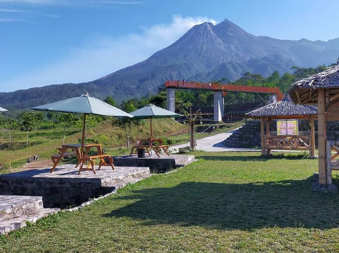
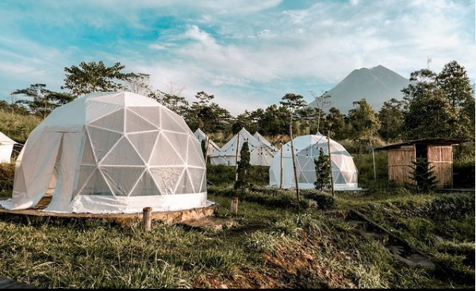
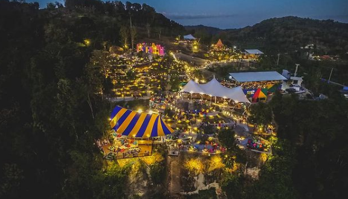
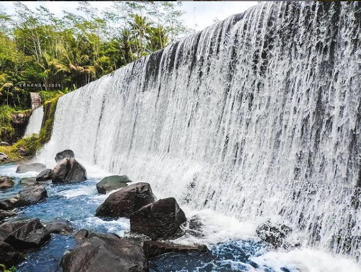
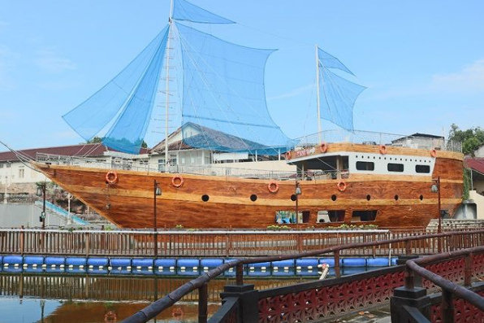
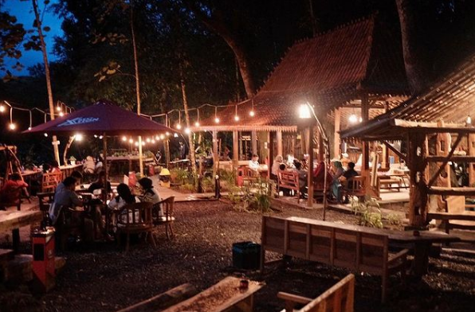

EXPLORE SLEMAN
Platform digital yang menyediakan informasi pariwisata di Kabupaten Sleman berbasis Web Geography Information System (Web GIS)
Let's Get Started
Platform digital yang menyediakan informasi pariwisata di Kabupaten Sleman berbasis Web Geography Information System (Web GIS)
Let's Get StartedKabupaten Sleman merupakan salah satu kabupaten di Provinsi Daerah Istimewa Yogyakarta (DIY). Uniknya, Kabupaten Sleman dikenal sebagai penghubung untuk aktivitas pariwisata Provinsi DIY - Jawa Tengah. Hal tersebut dikarenakan Kabupaten Sleman memiliki posisi yang strategis yaitu di antara Provinsi DIY dan Provinsi Jawa Tengah, sekaligus terletak di antara obyek wisata utama Provinsi DIY-Jawa Tengah yaitu Candi Borobudur, Kraton Yogyakarta, Malioboro, dan Candi Prambanan. Ditambah lagi dengan keberadaan Bandara Adisutjipto di wilayah Kabupaten Sleman yang memberikan kemudahan aksesibilitas bagi wisatawan berkunjung ke Provinsi DIY-Jawa Tengah pada umumnya dan Kabupaten Sleman khususnya.
Kabupaten Sleman memiliki potensi wisata yang menarik dan cukup beragam mulai dari wisata alam, wisata buatan, wisata budaya, desa wisata, wisata kuliner, dan wisata belanja. Keberagaman obyek wisata ini menjadikan Kabupaten Sleman sebagai destinasi wisata bagi para wisatawan domestik maupun mancanegara. Salah satu objek wisata yang terkenal di kabupaten Sleman adalah Candi Prambanan, yang merupakan salah satu warisan dunia yang diakui oleh UNESCO. Candi Prambanan juga menjadi candi Hindu terbesar di Indonesia, sekaligus candi terindah di Asia Tenggara. Selain Candi Prambanan, Kabupaten Sleman memiliki berbagai macam obyek wisata yang menarik untuk dikunjugi. Yuk temukan info wisata Sleman terbaik di sini.
Menyediakan informasi obyek wisata di Kabupaten Sleman, yang berisikan 4 jenis wisata





